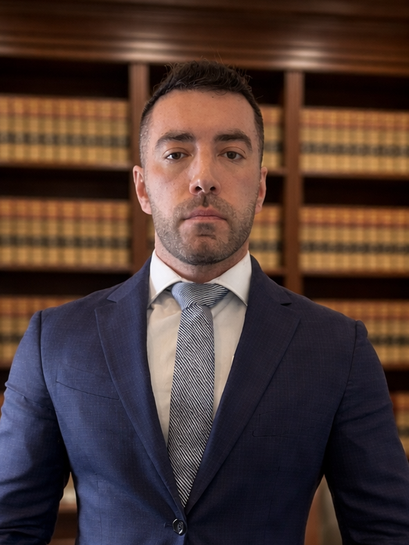

Conheça os sócios-fundadores do escritório Gastão da Rosa & Moukarzel. Profissionais dedicados com ampla experiência e atuação nas áreas do direito penal, cível, empresarial e administrativo, que valorizam o estudo e a atualização constante nas áreas jurídicas de atuação, para manter a alta expertise técnica do escritório e colocar à disposição dos clientes serviço de excelência durante o acompanhamento e a condução das mais variadas situações jurídicas, com o compromisso irrestrito e inegociável na defesa dos direitos de nossos clientes.
OAB/SC 47.774
Sócio-Fundador
Advogado criminalista com ampla atuação na defesa criminal em todas as instâncias, graduado em Direito pela Universidade do Sul de Santa Catarina — UNISUL (2010–2014). Possui Pós-Graduação em nível de Especialização em Direito Penal e Processual Penal pela Universidade do Vale do Itajaí — UNIVALI, em convênio com a Associação Catarinense do Ministério Público — ACMP (2015–2016).
Concluiu o Curso de Preparação ao Concurso de Ingresso à Carreira do Ministério Público pela ACMP e pela Escola do Ministério Público (2015), além de Curso de Extensão em Prática Penal pelo Damásio de Jesus (2017) — o que lhe confere domínio aprofundado tanto da perspectiva da acusação quanto da defesa. Possui experiência no Gabinete do Desembargador César Augusto Mimoso Ruiz Abreu e destaque em Sustentações Orais em Instâncias Superiores.
Integrante da família Gastão da Rosa, de grande tradição e destaque na advocacia criminal catarinense, Bruno dá continuidade ao legado de seu pai, Dr. Cláudio Gastão da Rosa, que foi um dos criminalistas mais reconhecidos em todo o Estado.
Formação Acadêmica
Graduação em Direito — UNISUL (2010–2014)
Especialização em Direito Penal e Processual Penal — UNIVALI/ACMP (2015–2016)
Curso de Extensão em Prática Penal — Damásio de Jesus (2017)
Áreas de Atuação
Direito Penal · Direito Processual Penal · Tribunal do Júri · Sustentações Orais em Instâncias Superiores
Idiomas
Português · Inglês (certificado por British and American)
Produção Acadêmica
A Percepção do Magistrado Após o Contato com Provas Ilícitas em Processo Penal

OAB/SC 36.591
Sócio-Fundador
Advogado com ampla experiência técnica nas áreas cível, criminal, administrativa e empresarial. Graduado em Direito desde 2012, com formação complementar pela Escola Superior da Magistratura do Estado de Santa Catarina — ESMESC (2016). Iniciou sua carreira como Assessor Parlamentar na Assembleia Legislativa do Estado de Santa Catarina — ALESC (2009–2011), onde atuou junto ao gabinete do Deputado Edison Andrino na elaboração de projetos de lei e assessoria e atendimento jurídico.
Atuou como Assessor Jurídico na Associação Barriga Verde dos Oficiais — ABVO (2013–2014), prestando assistência jurídica aos oficiais militares estaduais. Realizou Residência e Estágio de Pós-Graduação no Ministério Público de Santa Catarina — MPSC (2015–2016), lotado na 3ª Promotoria de Justiça da Comarca de Biguaçu, onde atuou essencialmente na área de Ações de Improbidade Administrativa e Ações Civis Públicas. Posteriormente, foi advogado sócio no renomado escritório Abreu & Sílvia Advogados Associados (2018–2022), atuando em assessoria cível, administrativa e criminal.
Atua sobretudo em processos de alta complexidade, acompanhando seus clientes em todas as situações jurídicas, desde a fase antecedente à ação judicial, inclusive em investigações preliminares e inquéritos policiais, até o encerramento da demanda, após a interposição de recursos junto aos tribunais superiores.
Comprometido com a ética, o sigilo e o atendimento personalizado, utiliza-se de toda a experiência adquirida ao longo de sua carreira profissional para entregar assistência jurídica de excelência e competência notável, com presença constante junto ao cliente em todas as etapas necessárias, e atuação em Florianópolis e em todo o território nacional.
Formação Acadêmica
Graduado em Direito (desde 2012)
Conclusão do Módulo I — ESMESC (2016)
Áreas de Atuação
Direito Penal · Direito Cível · Direito Administrativo · Direito Empresarial · Improbidade Administrativa
Idiomas
Português · Inglês
Experiência Profissional Prévia
Assembleia Legislativa do Estado de Santa Catarina (ALESC)
Associação Barriga Verde dos Oficiais (ABVO)
Ministério Público de Santa Catarina (MPSC)
Abreu & Sílvia Advogados Associados